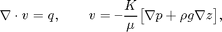
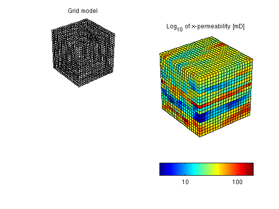
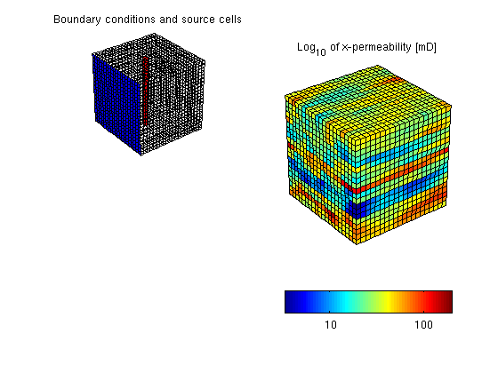
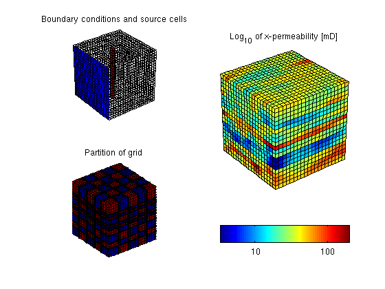
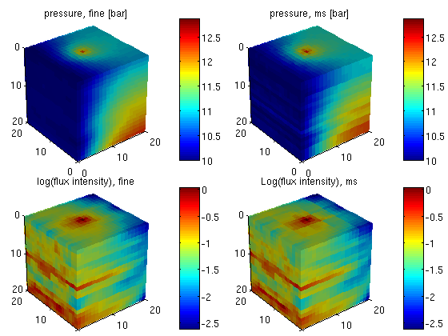

Contents
Multiscale: Sources and Boundary Conditions
Compare the fine-grid and the multiscale pressure solver by solving the single-phase pressure equation

for a Cartesian grid with lognormal, layered, isotropic permeability. This example is built upon the "Basic Multiscale Tutorial" and the flow-solver tutorial "How to Specify Sources and Boundary Conditions".
require coarsegrid
Define and visualize the model
We construct the Cartesian grid, set a lognormal, layered, isotropic permeability with given mean, and use the default single-phase fluid with unit viscosity
nx = 20; ny = 20; nz = 20; Nx = 5; Ny = 5; G = cartGrid([nx ny nz]); G = computeGeometry(G); [K, L] = logNormLayers([nx, ny, nz], 100*rand([10, 1])); rock.perm = convertFrom(K, milli*darcy); fluid = initSingleFluid('mu' , 1*centi*poise , ... 'rho', 1014*kilogram/meter^3); gravity reset on % To check that the model is correct, we plot it subplot(2,2,1) plotGrid(G,'FaceColor', 'none'); title('Grid model') view(3), camproj perspective, axis tight equal off subplot(2,2,[2 4]) plotCellData(G,log10(rock.perm(:,1)) ); shading faceted; title('Log_{10} of x-permeability [mD]'); view(3), camproj perspective, axis tight equal off h = colorbar('horiz'); dCorr = log10(darcy() / 1000); cs = round(caxis - dCorr); cs = cs(1) : cs(2); set(h, 'XTick', cs+dCorr, 'XTickLabel', num2str(10.^cs'));
Model vertical well as a column of cell sources, each with rate equal 1 m^3/day.
c = (nx/2*ny+nx/2 : nx*ny : nx*ny*nz) .'; src = addSource([], c, ones(size(c)) ./ day()); subplot(2,2,1); plotGrid(G, c, 'FaceColor', 'r'); title('Source cells');
Set boundary conditions: a Dirichlet boundary condition of p=10 bar at the global left-hand side of the model
bc = pside([], G, 'LEFT', 10*barsa()); subplot(2,2,1); plotFaces(G, bc.face, 'b'); title('Boundary conditions and source cells');
Partition the grid
We partition the fine grid into coarse blocks, ensuring that the coarse blocks do not cross the layers in our model (given by the vector L).
p = partitionLayers(G, [Nx, Ny], L); p = processPartition(G, p); subplot(2,2,3); plotCellData(G,mod(p,2)); shading faceted outlineCoarseGrid(G,p,'LineWidth',3); view(3); axis equal tight off title('Partition of grid');
Construct linear systems
We build the grid structure for the coarse grid and construct the fine and the coarse system
CG = generateCoarseGrid(G, p); S = computeMimeticIP(G, rock); CS = generateCoarseSystem(G, rock, S, CG, ones([G.cells.num, 1]), ... 'bc', bc, 'src', src);
Solve the global flow problems
xRef = solveIncompFlow (initResSol(G, 0.0), G, S, fluid, ... 'src', src, 'bc', bc); xMs = solveIncompFlowMS(initResSol(G, 0.0), G, CG, p, S, CS, fluid, ... 'src', src, 'bc', bc);
Plot solution
clf, cellNo = rldecode(1:G.cells.num, diff(G.cells.facePos), 2) .'; plot_var = @(x) plotCellData(G, x); plot_pres = @(x) plot_var(convertTo(x.pressure(1:G.cells.num), barsa())); plot_flux = @(x) plot_var(log10(accumarray(cellNo, ... abs(convertTo(faceFlux2cellFlux(G, x.flux), meter^3/day))))); subplot('Position',[0.02 0.52 0.46 0.42]), plot_pres(xRef); title('pressure, fine [bar]') view(3), camproj perspective, axis tight equal, camlight headlight cax = caxis; colorbar subplot('Position',[0.52 0.52 0.46 0.42]), plot_pres(xMs); title('pressure, ms [bar]') view(3), camproj perspective, axis tight equal, camlight headlight caxis(cax); colorbar subplot('Position',[0.02 0.02 0.46 0.42]), plot_flux(xRef); title('log(flux intensity), fine') view(3), camproj perspective, axis tight equal, camlight headlight cax2 = caxis; colorbar subplot('Position',[0.52 0.02 0.46 0.42]), plot_flux(xMs); title('Log(flux intensity), ms') view(3), camproj perspective, axis tight equal, camlight headlight caxis(cax2); colorbar